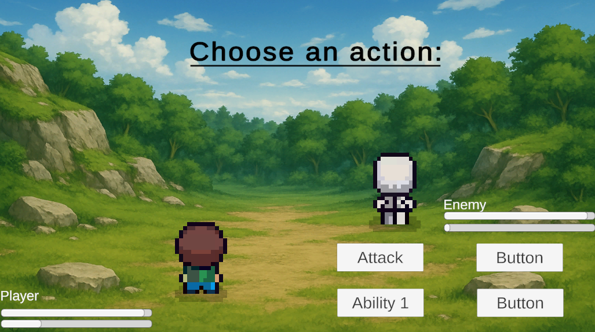
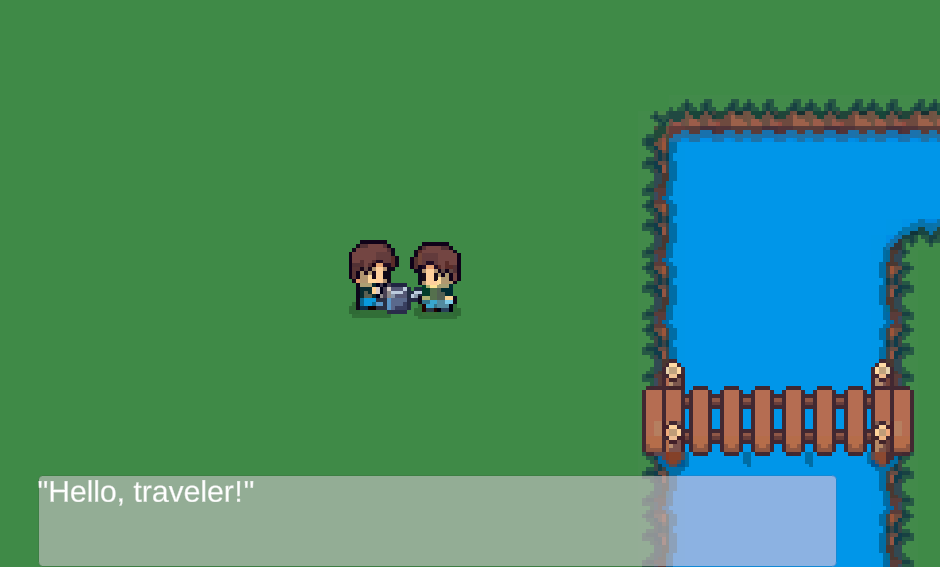

Reincarnated Fantasy Farmer (In Development)
No Demo Available Yet
This project is currently in active development.
Project Overview
An in-development hybrid RPG designed to bridge the gap between classic JRPG turn-based combat and cozy farming simulation. The current prototype focuses on establishing the core architecture required to balance these two distinct game loops—relaxing top-down exploration and strategic battles.
Note: This is an early development build. While it represents the most successful iteration of the core systems so far, it still contains known bugs and incomplete features.

Current Implementation (Prototype)
- JRPG Combat Foundation: Successfully implemented the core turn-based battle loop. The current build features a BattleSystem that manages turns, energy costs, and special attacks.
- World Persistence: Built a robust Singleton GameManager that tracks player position and world state. This system allows for seamless transitions between the "Peaceful" overworld and "Combat" scenes without losing progress.
- AI & Navigation: Integrated Unity's NavMeshAgent for 2D space to drive enemy behavior. Enemies currently wander the overworld and initiate combat upon player detection.
- Game Feel: Implemented a NudgeEffect system to add visual impact ("juice") to attacks, ensuring the turn-based combat feels responsive and punchy.

Technical Architecture
- State Management: Utilizes C# Enums to strictly control battle flow (Start, PlayerTurn, EnemyTurn, Won/Lost), preventing logic errors during turn transitions.
- Asynchronous Logic: Heavily uses Coroutines to manage animation timing and turn delays, preventing the UI from freezing during enemy actions.
- Data Handling: Includes a system to track unique Enemy IDs (defeatedEnemyID), ensuring defeated enemies remain removed from the overworld after battle.
Future Development Roadmap
- Farming Systems: Implementation of the grid-based farming mechanics (planting, watering, harvesting) to complement the combat.
- Inventory Expansion: Extending the current GameManager to handle crops, seeds, and crafting materials.
- Dialogue System: Adding narrative elements to enhance the "Cozy" atmosphere.